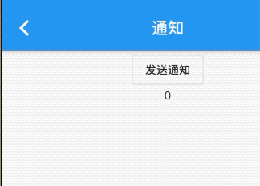

8.4 通知
Widget _body() {
return NotificationListener(
onNotification: (notification) {
switch (notification.runtimeType) {
case ScrollStartNotification:
print("开始滚动");
break;
case ScrollUpdateNotification:
print("正在滚动");
break;
case ScrollEndNotification:
print("滚动停止");
break;
case OverscrollNotification:
print("滚动到边界");
break;
}
return true;
},
child: CupertinoScrollbar(
child: SingleChildScrollView(
child: Container(
height: 2000,
width: 400,
color: Colors.orange,
),
),
),
);
}
这个例子我们使用了SingleChildScrollView,当发生滚动时，就会发送滚动通知ScrollStartNotification，滚动通知是继承ScrollNotification类，不同的通知包含的信息不一样的信息，比如ScrollUpdateNotification有一个scrollDelta属性，记录了移动的位移，其他的可以看官方文档。
NotificationListener的属性如下
NotificationListener({
Key key,
@required this.child,
this.onNotification,
})
NotificationListener继承了StatelessWidget类，可以直接在widget树中使用NotificationListener可以指定模板参数，但是必须继承Notification,当显式指定参数，那么返回的参数只会接受该类型的参数。
那么我们将代码改成
NotificationListener<ScrollStartNotification>(
...
...)
那么现在只能接收滚动开始的通知了。
onNotification回调为通知处理回调，签名如下
final NotificationListenerCallback<T> onNotification
typedef NotificationListenerCallback<T extends Notification> = bool Function(T notification);
返回值为bool,当返回值为true,防止冒泡，当false,继续向上冒泡。
Flutter的UI框架实现中，除了可滚动在组件移动会发生除ScrollNotification之外，还有其他的一些通知，如SizeChagneLayoutNotification、KeepAliveNotification、LayoutNotication等，flutter正式通过这种通知机制使父组件可以执行一些特定的事情。
自定义通知
定义一个继承Notification类
Widget _body2() {
return NotificationListener<FyNotification>(
onNotification: (FyNotification notification) {
setState(() {
_code = notification.code;
});
return false;
},
child: Center(
child: Column(
children: <Widget>[
Builder(
builder: (context) {
return OutlineButton(
child: Text('发送通知'),
onPressed: () {
FyNotification(code: 200).dispatch(context);
},
);
},
),
Text('$_code'),
],
),
),
);
}
}
class FyNotification extends Notification {
int code;
FyNotification({this.code});
}
FyNotification(code: 200).dispatch(context) 中的context的子树的context，因为我们监听的子树，所以需要build来构造一个子context，否则监听失败。 效果;

阻止冒泡
当返回false，则继续冒泡，当返回true则停止冒泡。
...
Widget _body2() {
return NotificationListener<FyNotification>(
onNotification: (notification) {
print('我是外层监听');
return false;
},
child: NotificationListener<FyNotification>(
onNotification: (FyNotification notification) {
setState(() {
_code = notification.code;
});
print('我是内层监听');
return true;
},
child: Center(
child: Column(
children: <Widget>[
Builder(
builder: (context) {
return OutlineButton(
child: Text('发送通知'),
onPressed: () {
FyNotification(code: 200).dispatch(context);
},
);
},
),
Text('$_code'),
],
),
),
),
);
}
当里层返回true效果：
flutter: 我是内层监听
flutter: 我是内层监听
flutter: 我是内层监听
flutter: 我是内层监听
当里层返回false效果：
flutter: 我是内层监听
flutter: 我是外层监听
flutter: 我是内层监听
flutter: 我是外层监听
原理
上边已经介绍完了通知的使用和自定义通知的使用，更深入些，了解一下flutter如何实现冒泡的原理的，看下源码，从发送通知函数触发，然后深入了解。Notification的dispath(context)方法看下，看看做了什么事情
void dispatch(BuildContext target) {
target?.visitAncestorElements(visitAncestor);
}
dispatch调用了当前的context的visitAncestorElements,改方法从当前元素遍历向父级元素visitAncestorElements有一个遍历回调参数，在遍历过程中对遍历到的父级元素都会执行该回调。遍历的终止条件是：已经遍历到根Element或某个遍历回调返回false。源码中传给visitAncestorElements方法的遍历回调为visitAncestor方法，我们看看visitAncestor方法的实现：
//遍历回调，会对每一个父级Element执行此回调
bool visitAncestor(Element element) {
//判断当前element对应的Widget是否是NotificationListener。
//由于NotificationListener是继承自StatelessWidget，
//故先判断是否是StatelessElement
if (element is StatelessElement) {
//是StatelessElement，则获取element对应的Widget，判断
//是否是NotificationListener 。
final StatelessWidget widget = element.widget;
if (widget is NotificationListener<Notification>) {
//是NotificationListener，则调用该NotificationListener的_dispatch方法
if (widget._dispatch(this, element))
return false;
}
}
return true;
}
visitAncestor会判断每一个遍历到的父级Widget是否是NotificationListener，如果不是，则返回true继续向上遍历，如果是，则调用NotificationListener的_dispatch方法，我们看看_dispatch方法的源码：
bool _dispatch(Notification notification, Element element) {
// 如果通知监听器不为空，并且当前通知类型是该NotificationListener
// 监听的通知类型，则调用当前NotificationListener的onNotification
if (onNotification != null && notification is T) {
final bool result = onNotification(notification);
// 返回值决定是否继续向上遍历
return result == true;
}
return false;
}
我们可以看到NotificationListener的onNotification回调最终是在_dispatch方法中执行的，然后会根据返回值来确定是否继续向上冒泡。上面的源码实现其实并不复杂，通过阅读这些源码，一些额外的点读者可以注意一下：
Context上也提供了遍历Element树的方法。
我们可以通过Element.widget得到element节点对应的widget；我们已经反复讲过Widget和Element的对应关系，读者通过这些源码来加深理解。